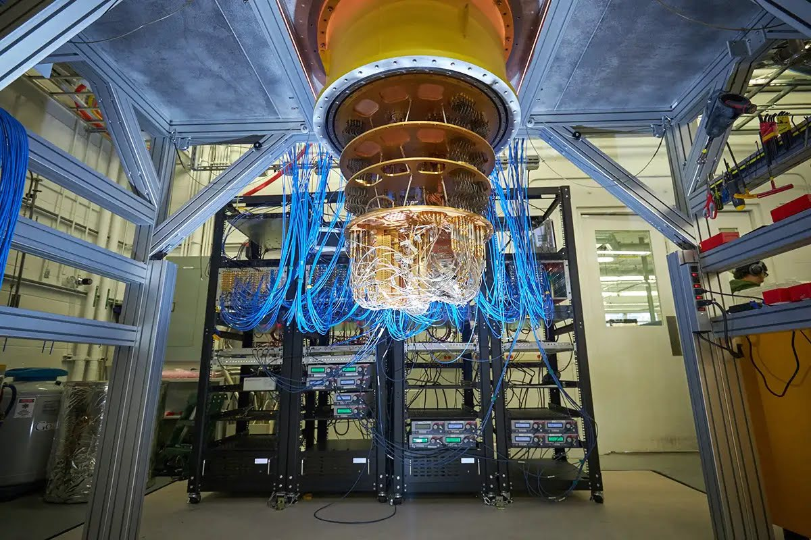
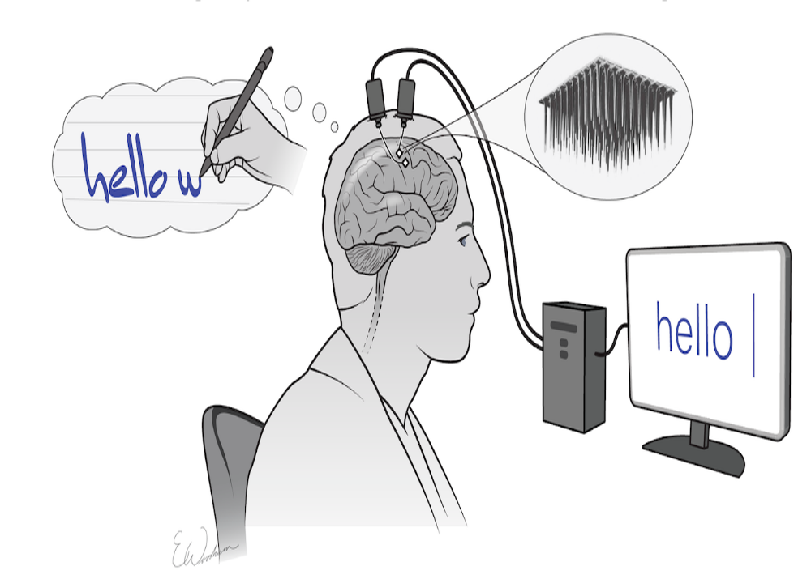
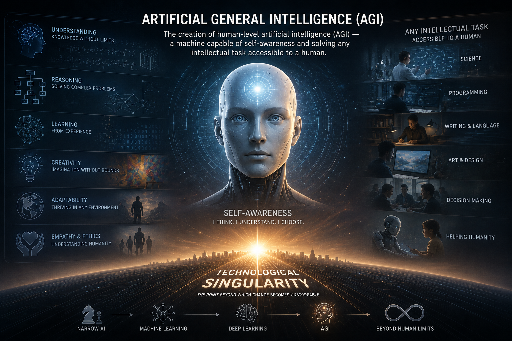
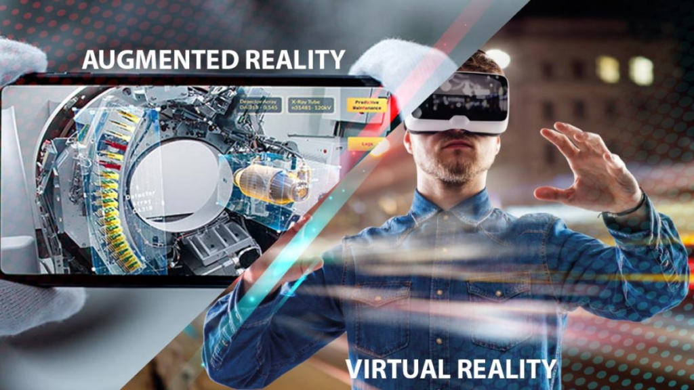

From the first mechanical calculators to artificial intelligence and quantum computers. Discover how technology has changed our world and what awaits us in the future.

Quantum computers, using qubits, will be able to solve problems in seconds that would take modern supercomputers thousands of years. This will revolutionize cryptography, medicine, and materials science.

Connecting the brain directly to a computer will not only allow the treatment of neurological diseases but also enable controlling devices with the power of thought and exchanging information on a fundamentally new level.

The creation of human-level artificial intelligence (AGI) — a machine capable of self-awareness and solving any intellectual task accessible to a human. This will become the point of technological singularity.

The development of VR and AR will lead to the creation of a digital reality where we can transmit not only sound and images but also smells, tastes, and tactile sensations over the network.